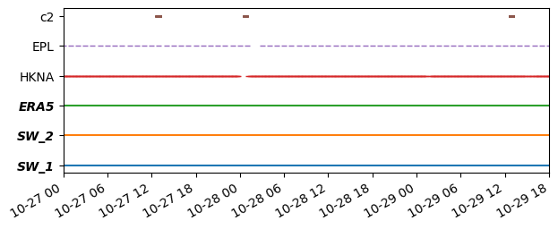
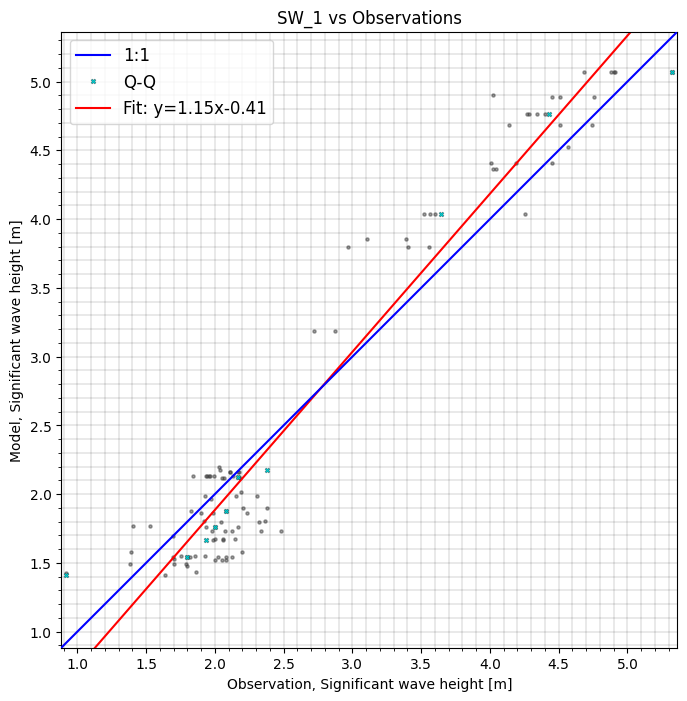
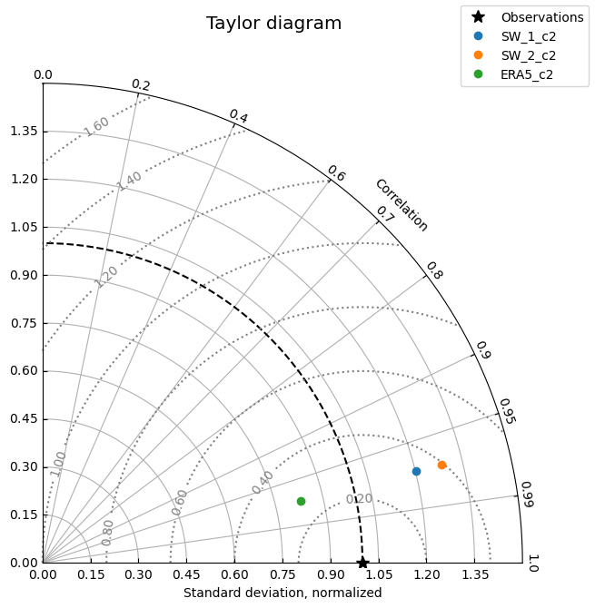
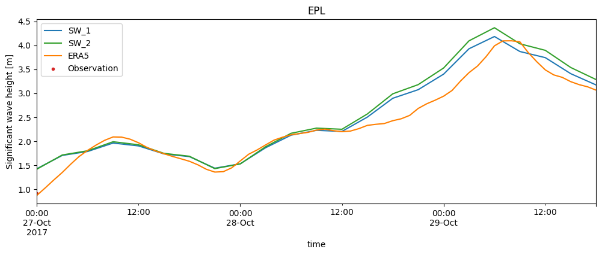
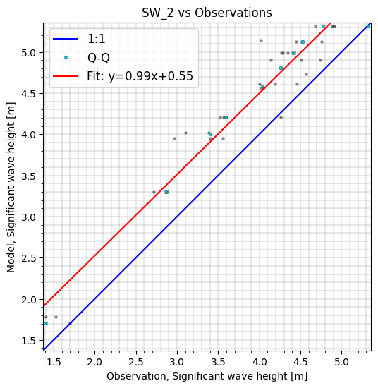
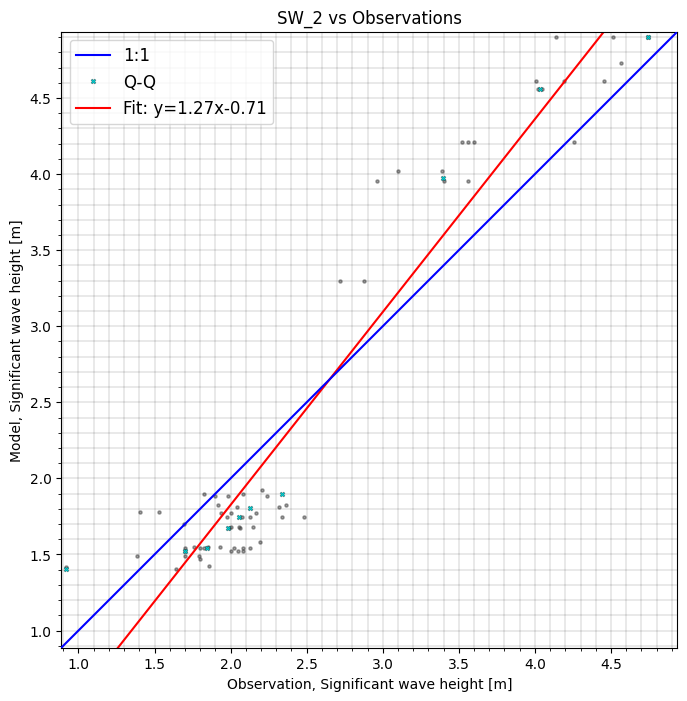
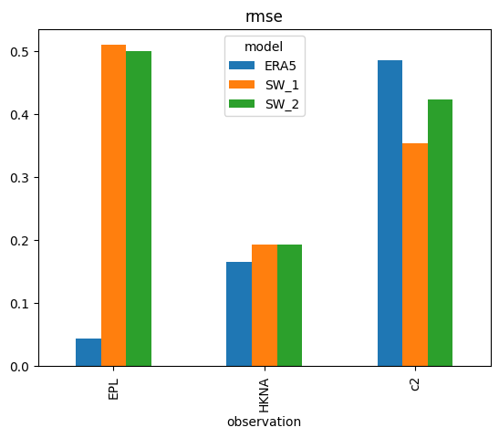
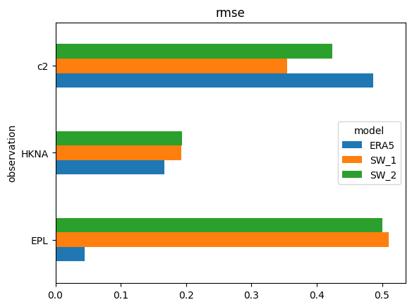
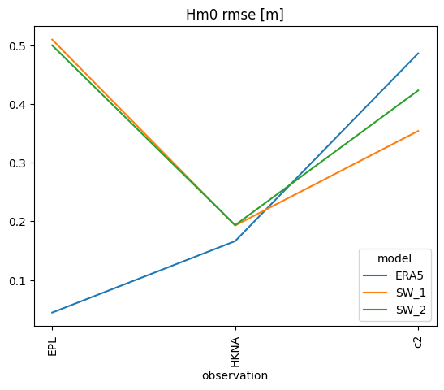
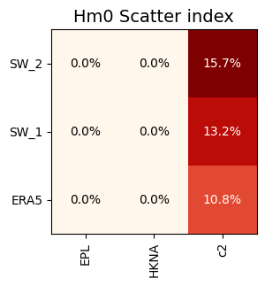

Multi model comparison#
We often want to compare the result of multiple models.
Calibration. We have several “runs” of the same model with different settings. We would like to find the best.
Validation. We would like to compare our model with alternative models, e.g. a regional DHI model or an external model.
In this notebook, we will consider several wave models for the Southern North Sea and compare to both point measurements and satellite altimetry data.
import numpy as np
import modelskill as ms
Define observations#
o1 = ms.PointObservation('data/SW/HKNA_Hm0.dfs0', item=0, x=4.2420, y=52.6887, name="HKNA")
o2 = ms.PointObservation("data/SW/eur_Hm0.dfs0", item=0, x=3.2760, y=51.9990, name="EPL")
o3 = ms.TrackObservation("data/SW/Alti_c2_Dutch.dfs0", item=3, name="c2")
Define models#
mr1 = ms.model_result('data/SW/HKZN_local_2017_DutchCoast.dfsu', name='SW_1', item=0)
mr2 = ms.model_result('data/SW/HKZN_local_2017_DutchCoast_v2.dfsu', name='SW_2', item=0)
mr3 = ms.model_result('data/SW/ERA5_DutchCoast.nc', name='ERA5', item="swh")
##
Temporal coverage#
ms.plotting.temporal_coverage([o1, o2, o3], [mr1, mr2, mr3]);

Match observations and model results#
# HKNA is outside ERA5 domain -> pick nearest grid cell
cc = ms.match(obs=[o1, o2, o3], mod=[mr1, mr2, mr3], spatial_method="nearest")
cc
/opt/hostedtoolcache/Python/3.13.12/x64/lib/python3.13/site-packages/mikeio/dataset/_dataset.py:505: FutureWarning: 'inplace' parameter is deprecated and will be removed in future versions. Use ds = ds.rename(...) instead.
warnings.warn(
/opt/hostedtoolcache/Python/3.13.12/x64/lib/python3.13/site-packages/mikeio/dataset/_dataset.py:505: FutureWarning: 'inplace' parameter is deprecated and will be removed in future versions. Use ds = ds.rename(...) instead.
warnings.warn(
/opt/hostedtoolcache/Python/3.13.12/x64/lib/python3.13/site-packages/mikeio/dataset/_dataset.py:505: FutureWarning: 'inplace' parameter is deprecated and will be removed in future versions. Use ds = ds.rename(...) instead.
warnings.warn(
/opt/hostedtoolcache/Python/3.13.12/x64/lib/python3.13/site-packages/mikeio/dataset/_dataset.py:505: FutureWarning: 'inplace' parameter is deprecated and will be removed in future versions. Use ds = ds.rename(...) instead.
warnings.warn(
/opt/hostedtoolcache/Python/3.13.12/x64/lib/python3.13/site-packages/mikeio/dataset/_dataset.py:505: FutureWarning: 'inplace' parameter is deprecated and will be removed in future versions. Use ds = ds.rename(...) instead.
warnings.warn(
/opt/hostedtoolcache/Python/3.13.12/x64/lib/python3.13/site-packages/mikeio/dataset/_dataset.py:505: FutureWarning: 'inplace' parameter is deprecated and will be removed in future versions. Use ds = ds.rename(...) instead.
warnings.warn(
<ComparerCollection>
Comparers:
0: HKNA - Significant wave height [m]
1: EPL - Significant wave height [m]
2: c2 - Significant wave height [m]
cc["EPL"] # select a single comparer from the collection like this
<Comparer>
Quantity: Significant wave height [m]
Observation: EPL, n_points=1
Model(s):
0: SW_1
1: SW_2
2: ERA5
Perform analysis#
You can perform simple filtering on specific observation or specific model. You can refer to observations and models using their name or index.
The main analysis methods are:
skill()
mean_skill()
scatter()
taylor()
cc.skill()
/opt/hostedtoolcache/Python/3.13.12/x64/lib/python3.13/site-packages/modelskill/metrics.py:344: RuntimeWarning: divide by zero encountered in scalar divide
return 1 - SSr / SSt
| n | bias | rmse | urmse | mae | cc | si | r2 | ||
|---|---|---|---|---|---|---|---|---|---|
| model | observation | ||||||||
| SW_1 | HKNA | 1 | 0.193009 | 0.193009 | 0.000000 | 0.193009 | NaN | 0.000000 | -inf |
| EPL | 1 | 0.510124 | 0.510124 | 0.000000 | 0.510124 | NaN | 0.000000 | -inf | |
| c2 | 102 | -0.025059 | 0.354270 | 0.353383 | 0.297344 | 0.970862 | 0.131869 | 0.889056 | |
| SW_2 | HKNA | 1 | 0.193590 | 0.193590 | 0.000000 | 0.193590 | NaN | 0.000000 | -inf |
| EPL | 1 | 0.500232 | 0.500232 | 0.000000 | 0.500232 | NaN | 0.000000 | -inf | |
| c2 | 102 | 0.050773 | 0.423351 | 0.420296 | 0.353069 | 0.970862 | 0.156839 | 0.841570 | |
| ERA5 | HKNA | 1 | -0.166382 | 0.166382 | 0.000000 | 0.166382 | NaN | 0.000000 | -inf |
| EPL | 1 | -0.044472 | 0.044472 | 0.000000 | 0.044472 | NaN | 0.000000 | -inf | |
| c2 | 102 | -0.390274 | 0.486571 | 0.290582 | 0.407335 | 0.972701 | 0.108435 | 0.790720 |
cc.sel(observation="c2").skill()
| n | bias | rmse | urmse | mae | cc | si | r2 | ||
|---|---|---|---|---|---|---|---|---|---|
| model | observation | ||||||||
| SW_1 | c2 | 102 | -0.025059 | 0.354270 | 0.353383 | 0.297344 | 0.970862 | 0.131869 | 0.889056 |
| SW_2 | c2 | 102 | 0.050773 | 0.423351 | 0.420296 | 0.353069 | 0.970862 | 0.156839 | 0.841570 |
| ERA5 | c2 | 102 | -0.390274 | 0.486571 | 0.290582 | 0.407335 | 0.972701 | 0.108435 | 0.790720 |
cc.sel(model=0, observation=[0,"c2"]).mean_skill()
/opt/hostedtoolcache/Python/3.13.12/x64/lib/python3.13/site-packages/modelskill/metrics.py:344: RuntimeWarning: divide by zero encountered in scalar divide
return 1 - SSr / SSt
| n | bias | rmse | urmse | mae | cc | si | r2 | |
|---|---|---|---|---|---|---|---|---|
| model | ||||||||
| ERA5 | 103 | -0.278328 | 0.326477 | 0.145291 | 0.286859 | NaN | 0.054217 | -inf |
| SW_1 | 103 | 0.083975 | 0.273639 | 0.176691 | 0.245176 | NaN | 0.065935 | -inf |
| SW_2 | 103 | 0.122181 | 0.308471 | 0.210148 | 0.273329 | NaN | 0.078419 | -inf |
cc.sel(model='SW_1').plot.scatter(cmap='OrRd');

cc.plot.taylor(normalize_std=True, aggregate_observations=False)

Time series plot (specifically for point comparisons)#
If you select an comparison from the collection which is a PointComparer, you can do a time series plot
cc['EPL'].plot.timeseries(figsize=(12,4));

Filtering on time#
Use the start and end arguments to do your analysis on part of the time series
cc.sel(model="SW_1", end='2017-10-28').skill()
/opt/hostedtoolcache/Python/3.13.12/x64/lib/python3.13/site-packages/modelskill/metrics.py:344: RuntimeWarning: divide by zero encountered in scalar divide
return 1 - SSr / SSt
| n | bias | rmse | urmse | mae | cc | si | r2 | |
|---|---|---|---|---|---|---|---|---|
| observation | ||||||||
| HKNA | 1 | 0.193009 | 0.193009 | 0.000000 | 0.193009 | NaN | 0.000000 | -inf |
| EPL | 1 | 0.510124 | 0.510124 | 0.000000 | 0.510124 | NaN | 0.000000 | -inf |
| c2 | 66 | -0.210375 | 0.323525 | 0.245786 | 0.268925 | 0.385374 | 0.121671 | -1.855535 |
cc.sel(model='SW_2', start='2017-10-28').plot.scatter(cmap='OrRd', figsize=(6,7));

Filtering on area#
You can do you analysis in a specific area by providing a bounding box or a closed polygon
bbox = np.array([0.5,52.5,5,54])
polygon = np.array([[6,51],[0,55],[0,51],[6,51]])
cc.sel(model="SW_1", area=bbox).skill()
/opt/hostedtoolcache/Python/3.13.12/x64/lib/python3.13/site-packages/modelskill/metrics.py:344: RuntimeWarning: divide by zero encountered in scalar divide
return 1 - SSr / SSt
| n | bias | rmse | urmse | mae | cc | si | r2 | |
|---|---|---|---|---|---|---|---|---|
| observation | ||||||||
| HKNA | 1 | 0.193009 | 0.193009 | 0.000000 | 0.193009 | NaN | 0.000000 | -inf |
| c2 | 42 | -0.055870 | 0.388404 | 0.384365 | 0.336023 | 0.952688 | 0.145724 | 0.749645 |
cc.sel(model="SW_2", area=polygon).plot.scatter();

Skill object#
The skill() and mean_skill() methods return a skill object that can visualize results in various ways. The primary methods of the skill object are:
style()
plot_bar()
plot_barh()
plot_line()
plot_grid()
sel()
s = cc.skill()
/opt/hostedtoolcache/Python/3.13.12/x64/lib/python3.13/site-packages/modelskill/metrics.py:344: RuntimeWarning: divide by zero encountered in scalar divide
return 1 - SSr / SSt
s.style()
/opt/hostedtoolcache/Python/3.13.12/x64/lib/python3.13/site-packages/pandas/io/formats/style.py:4209: RuntimeWarning: invalid value encountered in scalar multiply
norm = _matplotlib.colors.Normalize(smin - (rng * low), smax + (rng * high))
| n | bias | rmse | urmse | mae | cc | si | r2 | ||
|---|---|---|---|---|---|---|---|---|---|
| model | observation | ||||||||
| SW_1 | HKNA | 1 | 0.193 | 0.193 | 0.000 | 0.193 | nan | 0.000 | -inf |
| EPL | 1 | 0.510 | 0.510 | 0.000 | 0.510 | nan | 0.000 | -inf | |
| c2 | 102 | -0.025 | 0.354 | 0.353 | 0.297 | 0.971 | 0.132 | 0.889 | |
| SW_2 | HKNA | 1 | 0.194 | 0.194 | 0.000 | 0.194 | nan | 0.000 | -inf |
| EPL | 1 | 0.500 | 0.500 | 0.000 | 0.500 | nan | 0.000 | -inf | |
| c2 | 102 | 0.051 | 0.423 | 0.420 | 0.353 | 0.971 | 0.157 | 0.842 | |
| ERA5 | HKNA | 1 | -0.166 | 0.166 | 0.000 | 0.166 | nan | 0.000 | -inf |
| EPL | 1 | -0.044 | 0.044 | 0.000 | 0.044 | nan | 0.000 | -inf | |
| c2 | 102 | -0.390 | 0.487 | 0.291 | 0.407 | 0.973 | 0.108 | 0.791 |
s.style(columns='rmse')
/opt/hostedtoolcache/Python/3.13.12/x64/lib/python3.13/site-packages/pandas/io/formats/style.py:4209: RuntimeWarning: invalid value encountered in scalar multiply
norm = _matplotlib.colors.Normalize(smin - (rng * low), smax + (rng * high))
| n | bias | rmse | urmse | mae | cc | si | r2 | ||
|---|---|---|---|---|---|---|---|---|---|
| model | observation | ||||||||
| SW_1 | HKNA | 1 | 0.193 | 0.193 | 0.000 | 0.193 | nan | 0.000 | -inf |
| EPL | 1 | 0.510 | 0.510 | 0.000 | 0.510 | nan | 0.000 | -inf | |
| c2 | 102 | -0.025 | 0.354 | 0.353 | 0.297 | 0.971 | 0.132 | 0.889 | |
| SW_2 | HKNA | 1 | 0.194 | 0.194 | 0.000 | 0.194 | nan | 0.000 | -inf |
| EPL | 1 | 0.500 | 0.500 | 0.000 | 0.500 | nan | 0.000 | -inf | |
| c2 | 102 | 0.051 | 0.423 | 0.420 | 0.353 | 0.971 | 0.157 | 0.842 | |
| ERA5 | HKNA | 1 | -0.166 | 0.166 | 0.000 | 0.166 | nan | 0.000 | -inf |
| EPL | 1 | -0.044 | 0.044 | 0.000 | 0.044 | nan | 0.000 | -inf | |
| c2 | 102 | -0.390 | 0.487 | 0.291 | 0.407 | 0.973 | 0.108 | 0.791 |
s['rmse'].plot.bar();
s['rmse'].plot.barh(); # horizontal version


s = cc.skill(by=['model','freq:12H'], metrics=['bias','rmse','si'])
---------------------------------------------------------------------------
KeyError Traceback (most recent call last)
File pandas/_libs/tslibs/offsets.pyx:6213, in pandas._libs.tslibs.offsets._get_offset()
KeyError: 'H'
During handling of the above exception, another exception occurred:
ValueError Traceback (most recent call last)
File pandas/_libs/tslibs/offsets.pyx:6344, in pandas._libs.tslibs.offsets.to_offset()
File pandas/_libs/tslibs/offsets.pyx:6219, in pandas._libs.tslibs.offsets._get_offset()
File pandas/_libs/tslibs/offsets.pyx:6137, in pandas._libs.tslibs.offsets.raise_invalid_freq()
ValueError: Invalid frequency: H. Failed to parse with error message: KeyError('H'). Did you mean h?
During handling of the above exception, another exception occurred:
ValueError Traceback (most recent call last)
Cell In[23], line 1
----> 1 s = cc.skill(by=['model','freq:12H'], metrics=['bias','rmse','si'])
File /opt/hostedtoolcache/Python/3.13.12/x64/lib/python3.13/site-packages/modelskill/comparison/_collection.py:489, in ComparerCollection.skill(self, by, metrics, observed)
485 cc = self
487 pmetrics = _parse_metric(metrics)
--> 489 agg_cols = _parse_groupby(by, n_mod=cc.n_models, n_qnt=cc.n_quantities)
490 agg_cols, attrs_keys = self._attrs_keys_in_by(agg_cols)
492 df = cc._to_long_dataframe(attrs_keys=attrs_keys, observed=observed)
File /opt/hostedtoolcache/Python/3.13.12/x64/lib/python3.13/site-packages/modelskill/comparison/_utils.py:153, in _parse_groupby(by, n_mod, n_qnt)
151 if col[:5] == "freq:":
152 freq = col.split(":")[1]
--> 153 res.append(pd.Grouper(key="time", freq=freq))
154 else:
155 res.append(col)
File /opt/hostedtoolcache/Python/3.13.12/x64/lib/python3.13/site-packages/pandas/core/resample.py:2420, in TimeGrouper.__init__(self, obj, freq, key, closed, label, how, fill_method, limit, convention, origin, offset, group_keys, **kwargs)
2418 freq = to_offset(freq, is_period=True)
2419 else:
-> 2420 freq = to_offset(freq)
2422 if not isinstance(freq, Tick):
2423 if offset is not None:
File pandas/_libs/tslibs/offsets.pyx:6229, in pandas._libs.tslibs.offsets.to_offset()
File pandas/_libs/tslibs/offsets.pyx:6352, in pandas._libs.tslibs.offsets.to_offset()
File pandas/_libs/tslibs/offsets.pyx:6137, in pandas._libs.tslibs.offsets.raise_invalid_freq()
ValueError: Invalid frequency: 12H. Failed to parse with error message: ValueError("Invalid frequency: H. Failed to parse with error message: KeyError('H'). Did you mean h?")
s.style()
/opt/hostedtoolcache/Python/3.13.12/x64/lib/python3.13/site-packages/pandas/io/formats/style.py:4209: RuntimeWarning: invalid value encountered in scalar multiply
norm = _matplotlib.colors.Normalize(smin - (rng * low), smax + (rng * high))
| n | bias | rmse | urmse | mae | cc | si | r2 | ||
|---|---|---|---|---|---|---|---|---|---|
| model | observation | ||||||||
| SW_1 | HKNA | 1 | 0.193 | 0.193 | 0.000 | 0.193 | nan | 0.000 | -inf |
| EPL | 1 | 0.510 | 0.510 | 0.000 | 0.510 | nan | 0.000 | -inf | |
| c2 | 102 | -0.025 | 0.354 | 0.353 | 0.297 | 0.971 | 0.132 | 0.889 | |
| SW_2 | HKNA | 1 | 0.194 | 0.194 | 0.000 | 0.194 | nan | 0.000 | -inf |
| EPL | 1 | 0.500 | 0.500 | 0.000 | 0.500 | nan | 0.000 | -inf | |
| c2 | 102 | 0.051 | 0.423 | 0.420 | 0.353 | 0.971 | 0.157 | 0.842 | |
| ERA5 | HKNA | 1 | -0.166 | 0.166 | 0.000 | 0.166 | nan | 0.000 | -inf |
| EPL | 1 | -0.044 | 0.044 | 0.000 | 0.044 | nan | 0.000 | -inf | |
| c2 | 102 | -0.390 | 0.487 | 0.291 | 0.407 | 0.973 | 0.108 | 0.791 |
s['rmse'].plot.line(title='Hm0 rmse [m]');

s.plot.grid('si', fmt='0.1%', title='Hm0 Scatter index');
/opt/hostedtoolcache/Python/3.13.12/x64/lib/python3.13/site-packages/modelskill/skill.py:290: FutureWarning: Selecting metric in plot functions like modelskill.skill().plot.grid(si) is deprecated and will be removed in a future version. Use modelskill.skill()['si'].plot.grid() instead.
warnings.warn(

The sel() method can subset the skill object#
A new skill object will be returned
s = cc.skill()
s.style()
/opt/hostedtoolcache/Python/3.13.12/x64/lib/python3.13/site-packages/modelskill/metrics.py:344: RuntimeWarning: divide by zero encountered in scalar divide
return 1 - SSr / SSt
/opt/hostedtoolcache/Python/3.13.12/x64/lib/python3.13/site-packages/pandas/io/formats/style.py:4209: RuntimeWarning: invalid value encountered in scalar multiply
norm = _matplotlib.colors.Normalize(smin - (rng * low), smax + (rng * high))
| n | bias | rmse | urmse | mae | cc | si | r2 | ||
|---|---|---|---|---|---|---|---|---|---|
| model | observation | ||||||||
| SW_1 | HKNA | 1 | 0.193 | 0.193 | 0.000 | 0.193 | nan | 0.000 | -inf |
| EPL | 1 | 0.510 | 0.510 | 0.000 | 0.510 | nan | 0.000 | -inf | |
| c2 | 102 | -0.025 | 0.354 | 0.353 | 0.297 | 0.971 | 0.132 | 0.889 | |
| SW_2 | HKNA | 1 | 0.194 | 0.194 | 0.000 | 0.194 | nan | 0.000 | -inf |
| EPL | 1 | 0.500 | 0.500 | 0.000 | 0.500 | nan | 0.000 | -inf | |
| c2 | 102 | 0.051 | 0.423 | 0.420 | 0.353 | 0.971 | 0.157 | 0.842 | |
| ERA5 | HKNA | 1 | -0.166 | 0.166 | 0.000 | 0.166 | nan | 0.000 | -inf |
| EPL | 1 | -0.044 | 0.044 | 0.000 | 0.044 | nan | 0.000 | -inf | |
| c2 | 102 | -0.390 | 0.487 | 0.291 | 0.407 | 0.973 | 0.108 | 0.791 |
s.sel(model='SW_1').style()
/opt/hostedtoolcache/Python/3.13.12/x64/lib/python3.13/site-packages/pandas/io/formats/style.py:4209: RuntimeWarning: invalid value encountered in scalar multiply
norm = _matplotlib.colors.Normalize(smin - (rng * low), smax + (rng * high))
| model | n | bias | rmse | urmse | mae | cc | si | r2 | |
|---|---|---|---|---|---|---|---|---|---|
| observation | |||||||||
| HKNA | SW_1 | 1 | 0.193 | 0.193 | 0.000 | 0.193 | nan | 0.000 | -inf |
| EPL | SW_1 | 1 | 0.510 | 0.510 | 0.000 | 0.510 | nan | 0.000 | -inf |
| c2 | SW_1 | 102 | -0.025 | 0.354 | 0.353 | 0.297 | 0.971 | 0.132 | 0.889 |
s.sel(observation='HKNA').style()
/opt/hostedtoolcache/Python/3.13.12/x64/lib/python3.13/site-packages/pandas/io/formats/style.py:4204: RuntimeWarning: invalid value encountered in scalar subtract
rng = smax - smin
/opt/hostedtoolcache/Python/3.13.12/x64/lib/python3.13/site-packages/pandas/io/formats/style.py:4202: RuntimeWarning: All-NaN slice encountered
smin = np.nanmin(gmap) if vmin is None else vmin
/opt/hostedtoolcache/Python/3.13.12/x64/lib/python3.13/site-packages/pandas/io/formats/style.py:4203: RuntimeWarning: All-NaN slice encountered
smax = np.nanmax(gmap) if vmax is None else vmax
| observation | n | bias | rmse | urmse | mae | cc | si | r2 | |
|---|---|---|---|---|---|---|---|---|---|
| model | |||||||||
| SW_1 | HKNA | 1 | 0.193 | 0.193 | 0.000 | 0.193 | nan | 0.000 | -inf |
| SW_2 | HKNA | 1 | 0.194 | 0.194 | 0.000 | 0.194 | nan | 0.000 | -inf |
| ERA5 | HKNA | 1 | -0.166 | 0.166 | 0.000 | 0.166 | nan | 0.000 | -inf |
s.query('rmse>0.25').style()
/opt/hostedtoolcache/Python/3.13.12/x64/lib/python3.13/site-packages/pandas/io/formats/style.py:4209: RuntimeWarning: invalid value encountered in scalar multiply
norm = _matplotlib.colors.Normalize(smin - (rng * low), smax + (rng * high))
| n | bias | rmse | urmse | mae | cc | si | r2 | ||
|---|---|---|---|---|---|---|---|---|---|
| model | observation | ||||||||
| SW_1 | EPL | 1 | 0.510 | 0.510 | 0.000 | 0.510 | nan | 0.000 | -inf |
| c2 | 102 | -0.025 | 0.354 | 0.353 | 0.297 | 0.971 | 0.132 | 0.889 | |
| SW_2 | EPL | 1 | 0.500 | 0.500 | 0.000 | 0.500 | nan | 0.000 | -inf |
| c2 | 102 | 0.051 | 0.423 | 0.420 | 0.353 | 0.971 | 0.157 | 0.842 | |
| ERA5 | c2 | 102 | -0.390 | 0.487 | 0.291 | 0.407 | 0.973 | 0.108 | 0.791 |